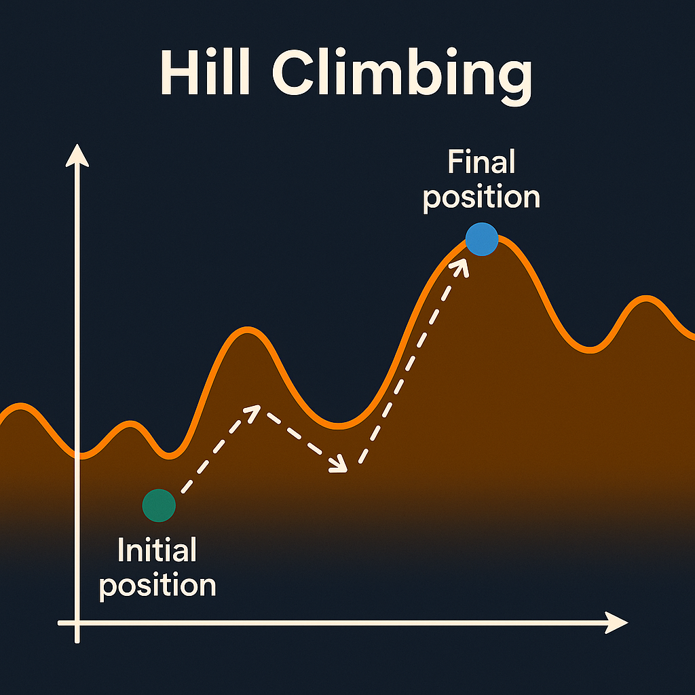
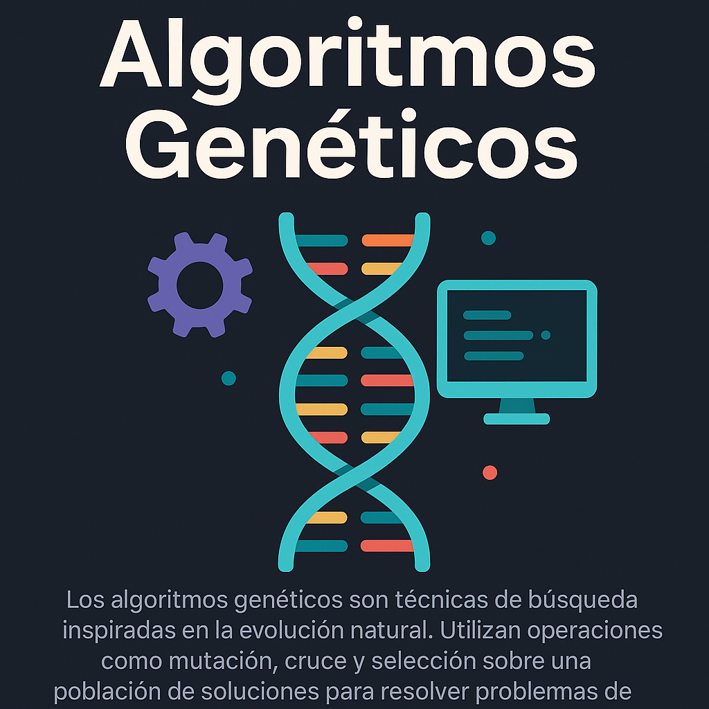
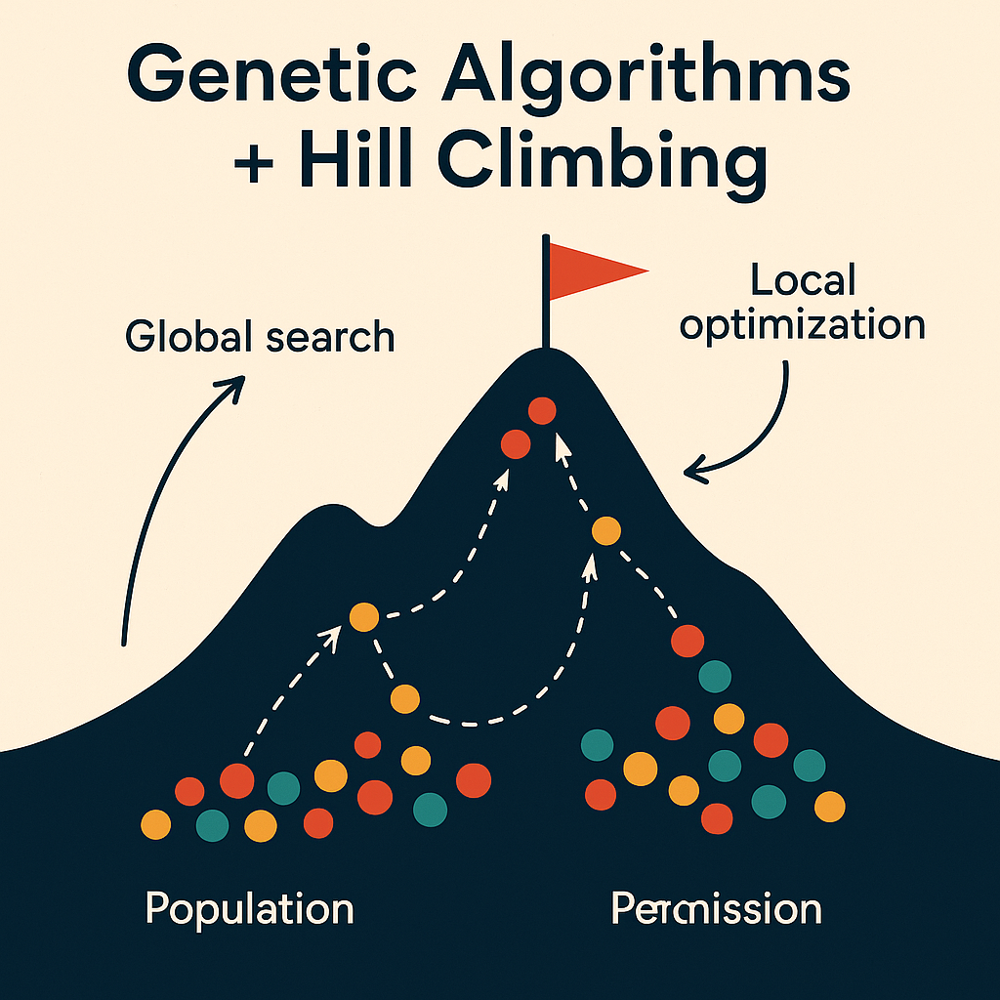

Explorando la Inteligencia Artificial con Hill Climbing y Algoritmos Evolutivos
Aprende los fundamentos de técnicas heurísticas y evolutivas para resolver problemas complejos de optimización.
[ Ver más abajo ↓ ]

HILL CLIMBING - CONCEPTO
Hill Climbing (escalada de colina) es un algoritmo de búsqueda heurística utilizado para resolver problemas de optimización. Parte de una solución inicial y, mediante iteraciones, explora las soluciones vecinas buscando mejorar el valor de una función objetivo (fitness)

ALGORITMOS GENETICOS
Los algoritmos geneticos son métodos que imitan la evolución natural para resolver problemas.

HILL CLIMBING Y ALGORITMOS GENETICOS
La combinación de algoritmos genéticos con Hill Climbing da lugar a los algoritmos meméticos, que integran exploración global y mejora local.